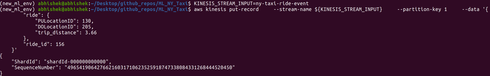
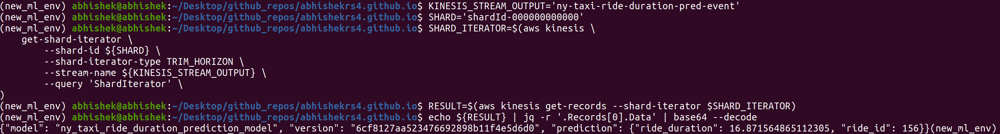

Tech Blog: Deploying an AWS Lambda function in Python with Kinesis streaming for a machine learning model
Posted by Abhishek R. S. on 2024-07-23
The blog is about...
Creating a serverless deployment using AWS Lamdba function in Python with Kinesis streaming for serving a machine learning model.
The project can be found in the following Github repo
ML_NY_TAXI/aws_lambda_kinesis .
Some of the benefits of using data streams is that it can support one to many relationship i.e., one publisher to many subscribers.
Another important benefit is the retention period of data on streams is much larger and can be utilized for certain applications where
http post request form of web service cannot be used because of lower request timeout.
1.1) IAM setup
Although, this is out of the scope of this blogpost, it is a standard practice to setup IAM users, groups and roles.
Create an AWS user if not present already. Create a group for AWS Lambda users, Kinesis users, API Gateway admin, ECR users.
Add user to these groups. Add apporpriate policies to these groups by giving full access to relevant things.
Create a role for lambda kinesis and add the policy for lambda kinesis execution access.
1.2) Setting up a Kinesis stream for ride and prediction events
A Kinesis stream can be created in AWS Kinesis. Refer to the following steps
Kinesis -> Kinesis Data Streams -> Create data stream -> Choose a name for the data stream -> Select provisioned for capacity mode ->
Select 1 for provisioned shards -> Create data stream
Voila! A Kinesis data stream is ready to be utilized as a trigger for a Lambda function.
Similarly, create another data stream for prediction where the predictions from the Lambda function will be published.
1.3) Creating a docker image for the lambda function
A list of publicly available docker images for AWS can be found in
Amazon Elastic Container Registry (ECR) public gallery.
One can search for "lambda python" and find a docker image for appropriate python version under Image tags.
This image can be used as a base docker image to build a custom docker image for a lambda function.
Unlike a typical Dockerfile, there will be certain changes.
-
There is no need to set working directory using WORKDIR /app
that is usually done in case of dockerizing a Flask / FastAPI application.
There is a default working directory that is configured in the base docker image.
-
There is no need to expose a port for dockerizing the lambda function,
that is usually done in case of dockerizing a Flask / FastAPI application.
-
The final CMD to run an application inside the container will just be the
lambda_function_script:lambda_function_handler
To build the docker container, use the following command,
docker build -t aws-lambda-kinesis-ny-taxi .
1.4) Creating a repo for docker container on AWS ECR
Create a private repo for the docker container using the following steps.
ECR -> Create repo -> Select private -> Choose a name for the repo -> Create repo
Once the repo is created, go to the repo on AWS, see View Push Commands. Run all the commands in the terminal.
1.5) Setting up the Lambda function on AWS with additional configurations
The AWS Lambda function needs to be set up. This can be done using the following steps.
Lambda -> Create function -> Select from container image -> Choose a name for the lambda function ->
Choose the container image with browse images -> Choose x86_64 -> Choose existing role and select the role that was created earlier
-> Create
Add env variables to the lambda function. This can be done in config -> environment variables -> edit
Add a trigger for the lambda function by selecting the appropriate data stream that was created earlier.
Set a higher timeout like 30 sec. (for initial loading) and a slightly higher memory in Configuration -> General -> Timeout.
After applying the above changes and test it, things will work. The first time will take a longer time to run (like > 20 sec.) and
the subsequent runs will be much faster (in milli sec.). The following image shows the successful test of the lambda function.
1.6) Attaching additional policies for the Lambda function role
Add an additional policy to the role that was created earlier to allow lambda function access to the S3 bucket, to load the saved model.
This can be done using the following steps
Go to IAM -> Roles -> Select the role that was created earlier for the lambda kinesis execution -> Add permission -> Create inline policy
-> Choose service (S3) -> Select all list and read actions -> In Resources specify ARN for bucket (bucket_name) and object (*)
Add ARN -> Next -> Select policy name -> Attach policy
Add an additional policy to the role that was created earlier to allow lambda function to publish predictions to the prediction data stream.
This can be done using the following steps
Go to IAM -> Roles -> Select the role that was created earlier for the lambda kinesis execution -> Add permission -> Create inline policy
-> Choose service (Kinesis) -> Select putRecord and putRecords in write actions -> In Resources specify ARN for prediction stream
(stream_name and region) -> Add ARN -> Next -> Select policy name -> Attach policy
1.7) Verifying the working of the Lambda function in the terminal
In a terminal, run the following to send data to input Kinesis stream
KINESIS_STREAM_INPUT=ny-taxi-ride-event
aws kinesis put-record --stream-name ${KINESIS_STREAM_INPUT} --partition-key 1 --data '{
"ride": {
"PULocationID": 130,
"DOLocationID": 205,
"trip_distance": 3.66
},
"ride_id": 156
}'
In a terminal, run the following command to read data from the output Kinesis stream
KINESIS_STREAM_OUTPUT='ny-taxi-ride-duration-pred-event'
SHARD='shardId-000000000000'
SHARD_ITERATOR=$(aws kinesis \
get-shard-iterator \
--shard-id ${SHARD} \
--shard-iterator-type TRIM_HORIZON \
--stream-name ${KINESIS_STREAM_OUTPUT} \
--query 'ShardIterator' \
)
RESULT=$(aws kinesis get-records --shard-iterator $SHARD_ITERATOR)
echo ${RESULT} | jq -r '.Records[0].Data' | base64 --decode
The following image shows the success of the publishing data to the Kinesis input stream.

The following image shows the success of reading the data from the Kinesis output stream and decoding it.

1.8) Monitoring CloudWatch Logs
One can easily look at the CloudWatch logs. This can be done from the lambda function console.
Go to Lambda function console -> Monitor -> View CloudWatch logs -> Select the log stream to view the log events
1.9) Challenges faced
-
I faced some issues with package dependencies while building the docker container image. The main issue was with boto3 package.
The package is already installed in the base docker image but the newer MLFlow version will require a newer boto3
version. This is because MLFlow will use boto3 SDK for AWS S3 bucket operations for handling model artifacts.
However, I was able to resolve the issue with a quick update of boto3.
-
The other challenge was with minor typos in the policies attached to the role. The typos were in the policies -
After fixing these issues, things worked smoothly.
Main takeaway
-
I learned to create a lambda function in Python with AWS Kinesis streaming for deploying a machine learning model. I learned to
configure env variables for the lambda function.
-
I learned to create Kinesis data streams. I learned to use one data stream to trigger the lambda function and another
to publish the predictions of the machine learning model.
-
I learned to attach additional policies for the role to give the lambda function access to S3 bucket to load the saved model and
access to publish the predictions to a Kinesis data stream .
I learned a lot of new things in this project. To deploying more complex ML models using AWS Lambda, Kinesis in the future 😄.
Next Steps
|